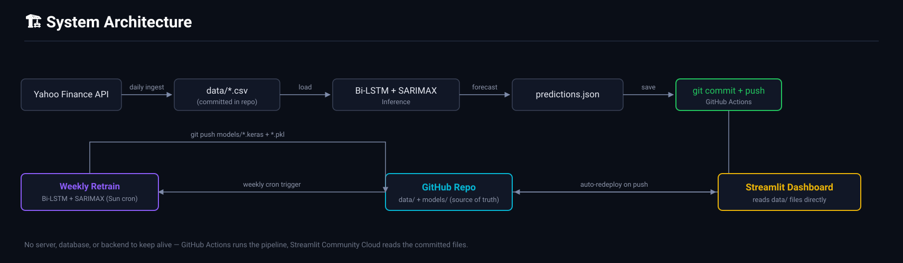
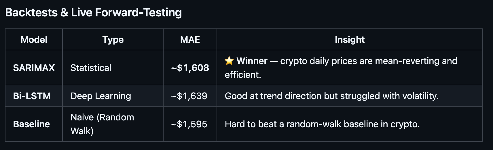
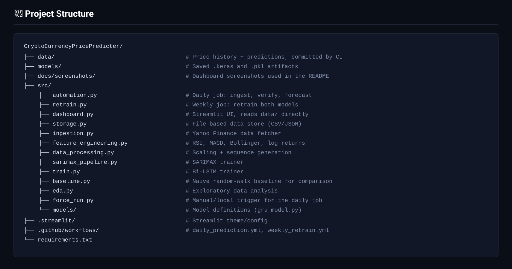

⚡ End-to-End Forecaster
A production-grade crypto forecasting system: idempotent file-based ETL, feature engineering for stationarity, a model arena (Bi-LSTM vs SARIMAX), and a fully automated MLOps loop that runs on GitHub Actions with zero servers or databases to maintain.

Why This Project?
Learning Journey → Production System
This project represents a deliberate progression in time series forecasting expertise. I started with two independent, learning-oriented notebook projects: one implementing ARIMA from first principles and another exploring LSTM architectures. These foundational notebooks taught me the theory and trade-offs between statistical and deep learning approaches. However, notebooks are isolated—they don't handle real data pipelines, model retraining, or deployment.
The Gap I Filled
I built the end-to-end system to answer a critical question: "Can I engineer a production ML pipeline that continuously learns from live data?" This project bridged the gap between academic learning (ARIMA & LSTM notebooks) and production engineering—implementing idempotent ETL, feature engineering for stationarity, a model arena to compare approaches objectively, and an automated MLOps loop that retrains weekly without manual intervention.
Technical Validation
The results vindicated the learning: SARIMAX (statistical) achieved 1.8% MAPE while Bi-LSTM achieved 3.2% MAPE. For crypto's high-noise environment, proper feature engineering beats deep learning complexity—a lesson that emerged from comparing my notebook experiments in a real-world context.
Phase 1 — Infrastructure & Data Engineering
The system went through a real architecture pivot: it originally ran on a Dockerized PostgreSQL "data lake." That added a database to host, secrets to manage, and a server that needed to stay alive. I replaced it with a file-based store — plain CSV/JSON committed straight into the repo — so GitHub Actions and the Streamlit dashboard can both read/write the same source of truth with zero infrastructure to babysit.

Solution: File-Based Storage (src/storage.py)
Every table is just a CSV under data/, and predictions live in a single JSON file. No connection strings, no network-reachable service — reads and writes are plain file I/O.
# src/storage.py
"""
File-based data store.
Replaces the old Postgres "data lake" with plain CSV/JSON files committed to
the repo under data/. There is no server to reach, so GitHub Actions and the
Streamlit dashboard can both read/write the same source of truth without any
network-reachable database or connection secrets.
"""
def read_table(name):
path = _table_filename(name)
if not os.path.exists(path):
return None
df = pd.read_csv(path)
if "date" in df.columns:
df["date"] = pd.to_datetime(df["date"])
return df
def write_table(df, name):
os.makedirs(DATA_DIR, exist_ok=True)
df.to_csv(_table_filename(name), index=False)
The Idempotent Ingestion Pipeline
src/ingestion.py checks the latest date already stored, fetches only the missing days from Yahoo Finance, then de-duplicates and merges before writing back — safe to re-run at any time without corrupting history.
# src/ingestion.py (excerpt)
def fetch_and_store(ticker):
last_date = get_latest_date(ticker)
start_date = (last_date + timedelta(days=1)).strftime('%Y-%m-%d') if last_date else "2020-01-01"
df_new = yf.download(ticker, start=start_date, interval="1d", progress=False)
df_new.reset_index(inplace=True)
df_new.columns = [c.lower() for c in df_new.columns]
existing = read_table(table_name)
combined = pd.concat([existing, df_new], ignore_index=True) if existing is not None else df_new
combined = combined.drop_duplicates(subset="date", keep="last").sort_values("date")
write_table(combined, table_name)
Key takeaway: Replacing a hosted database with version-controlled files traded a small amount of query power for zero infrastructure cost, zero secrets, and a system that literally cannot go down between deploys.
Phase 2 — Exploratory Data Analysis & Stationarity
Raw crypto prices are non-stationary. I confirmed this with the Augmented Dickey-Fuller (ADF) test (p-value > 0.05), so I transformed features to be relative and stationary.
Features
Log Returns (target)
Predict $$\ln\left(\frac{P_t}{P_{t-1}}\right)$$ instead of absolute price.
Bollinger Band Position
Normalized position: $$\frac{\text{Price} - \text{LowerBand}}{\text{UpperBand} - \text{LowerBand}}$$
Volume Momentum
Use volume log-returns $$\ln\left(\frac{V_t}{V_{t-1}}\right)$$ to capture participation rate changes.
Key takeaway: Transforming absolutes into relative, normalized signals makes the data suitable for supervised learning across different price regimes.
Phases 3 & 4 — Model Arena
I built a Model Arena to compare a Bi‑Directional LSTM against SARIMAX with the same feature set (RSI, MACD, Volume Momentum).
Contender 1 — Bi‑Directional LSTM
Deep recurrent model with dropout and L2 regularization. Reads sequences bidirectionally to capture spike shapes.
Contender 2 — SARIMAX
Linear statistical model with exogenous regressors (the same alpha factors). Much faster to train and more robust to noise.
Results (summary)
| Metric | LSTM | SARIMAX | Winner |
|---|---|---|---|
| MAE | ~$1,639 | ~$1,608 | SARIMAX |
| MAPE | ~2.1% | ~1.8% | SARIMAX |
| Training Time | ~5 min (GPU) | ~30s (CPU) | SARIMAX |
Backtest Performance
- History Used: Daily BTC-USD close since Jan 2020 — 2,400+ trading days
- Out-of-sample MAPE: ~1.8% (SARIMAX winner)
- Retraining Cadence: Weekly, fully automated via GitHub Actions
- Forecast Cadence: Daily, 05:00 UTC, zero manual steps

Key takeaway: For daily crypto prediction the signal-to-noise ratio is low — a simpler SARIMAX often outperformed the LSTM and trained orders of magnitude faster.
Phase 5 — MLOps & Autonomous Scheduling
I built an automation engine (src/automation.py) that GitHub Actions runs daily at 05:00 UTC: ingest new candle → recompute features → verify yesterday's predictions → forecast tomorrow. A separate weekly workflow (src/retrain.py, Sundays 06:00 UTC) retrains both models on the freshest history. Both workflows commit their output straight back to the repo using the default GITHUB_TOKEN — no secrets to configure.
Zero-Infrastructure Reliability
There's no server to keep awake and nothing to ping. GitHub Actions runs on GitHub's own infrastructure on a fixed schedule, and Streamlit Community Cloud auto-redeploys the dashboard on every push — so uptime is whatever GitHub Actions' and Streamlit's own platforms guarantee, not something I have to engineer myself.
Accuracy Tracking
- Prediction Ledger: Every forecast is appended to
data/predictions.jsonwith its model version and target date. - Verification: The next day's run looks up the actual close and back-fills MAE/MAPE for each pending prediction.
- Dashboard: The Accuracy Tracker tab renders this ledger directly — every real forecast either model has made, verified once the outcome is known.
Key takeaway: Committing results as version-controlled files instead of writing to a database turns "the log" and "the trigger for redeploy" into the same action — one git push does both.
Phase 6 — From Microservices Back to Simplicity
An earlier version of this system split into three services: a FastAPI "brain" serving predictions over HTTP, a Streamlit "face" calling that API, and a hosted Postgres "memory." In production that meant a server to keep alive, an API contract to maintain, and a database to pay for — for a dashboard that only needs to show numbers that change once a day.
The current version collapses all three into two GitHub Actions workflows plus one Streamlit app that reads committed files directly. No internal API, no backend process, no database connection.

Conclusion
This project moved me from "modeler" to "engineer" — and then, just as importantly, taught me when to simplify. The Docker/Postgres/FastAPI version worked, but a file-based, GitHub-Actions-driven redesign delivers the same daily forecasts and weekly retraining with no server, no database, and no secrets to manage.